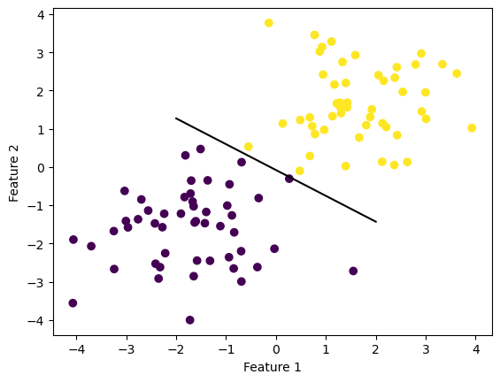

Implementing and Exploring the Perceptron Algorithm
Author
Wright Frost
Published
February 27, 2023
import numpy as npimport pandas as pdimport seaborn as snsfrom matplotlib import pyplot as pltfrom sklearn.datasets import make_blobsnp.random.seed(12345)n =100p_features =3X, y = make_blobs(n_samples =100, n_features = p_features -1, centers = [(-1.7, -1.7), (1.7, 1.7)])fig = plt.scatter(X[:,0], X[:,1], c = y)xlab = plt.xlabel("Feature 1")ylab = plt.ylabel("Feature 2")

from perceptron import Perceptronimport numpy as npimport pandas as pdimport seaborn as snsfrom matplotlib import pyplot as pltp = Perceptron()p.fit(X, y,1000)
If we print the last ten values in the Perceptron history array – that is to say, how accurate the last ten values were, we see that 99% of points were correctly classified for 9 of the last ten iterations, before the algorithm achieves 100% accuracy. 100% accuracy is achieved when the algorithm misclassifies a point and makes one final correction. It makes sense that there would be many instances of a 99% accurate line before the final update, since in order to update the algorithm needs to incorrectly classify a point. If 99% of points are correctly classfied, it will take a long time to randomly select a point that is misclassified and forces the algorithm to update.
Let’s see how the algorithm updates over time if the data are linearly separable.
These three plots only show instances where the weight vector updates (that is to say, when the algorithm misclassifies a point and updates the weight vector to reflect this).
We can see that the algorithm still updates and tries to correct itself, but is unable to achieve total accuracy. Including more subplots shows that this process of guessing but never achieving convergence will continue infinitely.